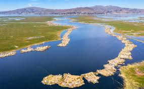
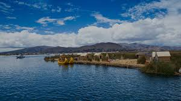
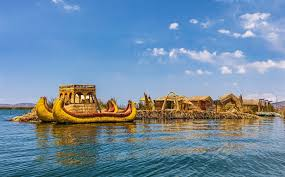

Lago Titicaca
1. Cuencas Geográficas

- Lago Mayor o Chucuito (Perú): Es la parte más grande y profunda del lago. Se extiende hacia el territorio peruano y alberga la mayoría de las islas turísticas más conocidas.
- Lago Menor o Huiñaymarca (Bolivia): Es la parte más pequeña y superficial, ubicada en el lado boliviano. A pesar de su tamaño, es hogar de importantes comunidades y paisajes.
2. Principales Islas (Lado Peruano)

- Islas de los Uros: Son un conjunto de más de 100 islas artificiales construidas completamente con totora, una planta acuática que crece en el lago. La comunidad Uro vive en estas islas, manteniendo sus tradiciones ancestrales y su peculiar estilo de vida. Los turistas pueden visitar las islas, aprender sobre su construcción y navegar en las tradicionales balsas de totora.
- Isla Taquile: Conocida por su impresionante arte textil, declarado Patrimonio Cultural Inmaterial de la Humanidad por la UNESCO. Los habitantes de Taquile, los taquileños, viven en esta isla natural y se dedican a la agricultura y la pesca. Las prendas tejidas por los hombres y mujeres de la isla no solo son una forma de arte, sino que también transmiten información social, como el estado civil.
- Isla Amantaní: Similar a Taquile, esta isla ofrece un tipo de turismo vivencial donde los visitantes pueden hospedarse en las casas de los lugareños, compartir sus comidas y participar en sus actividades diarias. En sus cimas se encuentran ruinas preíncas de los templos de Pachatata (Padre Tierra) y Pachamama (Madre Tierra).
3. Principales Ciudades y Puntos de Interés

- Puno (Perú): Es la capital del departamento y la principal puerta de entrada al Lago Titicaca desde el lado peruano. Es una ciudad vibrante con una gran riqueza folclórica, conocida por su música y danzas. Desde su puerto, parten las embarcaciones hacia las islas de los Uros, Taquile y Amantaní.
- Copacabana (Bolivia): Ubicada en el lado boliviano, es la ciudad más importante para acceder a la parte sur del lago. Desde aquí se puede visitar la famosa Isla del Sol, considerada el lugar de origen de la mitología inca.